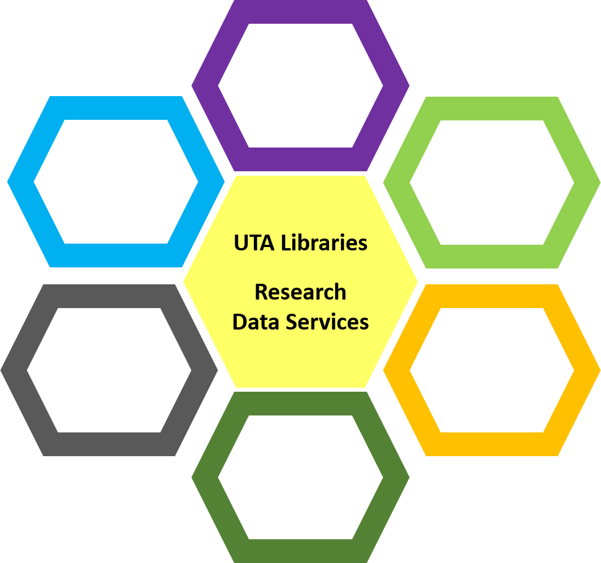
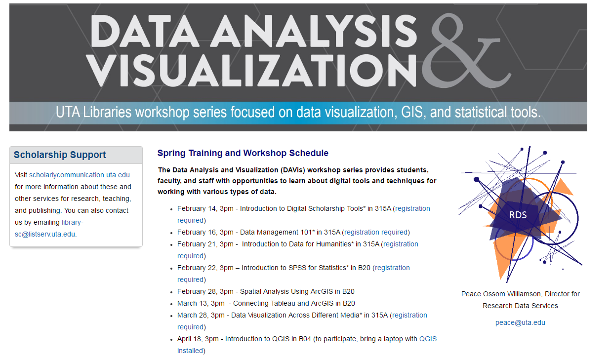
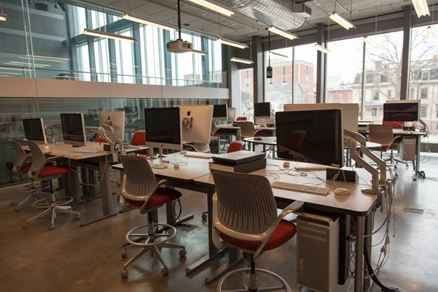
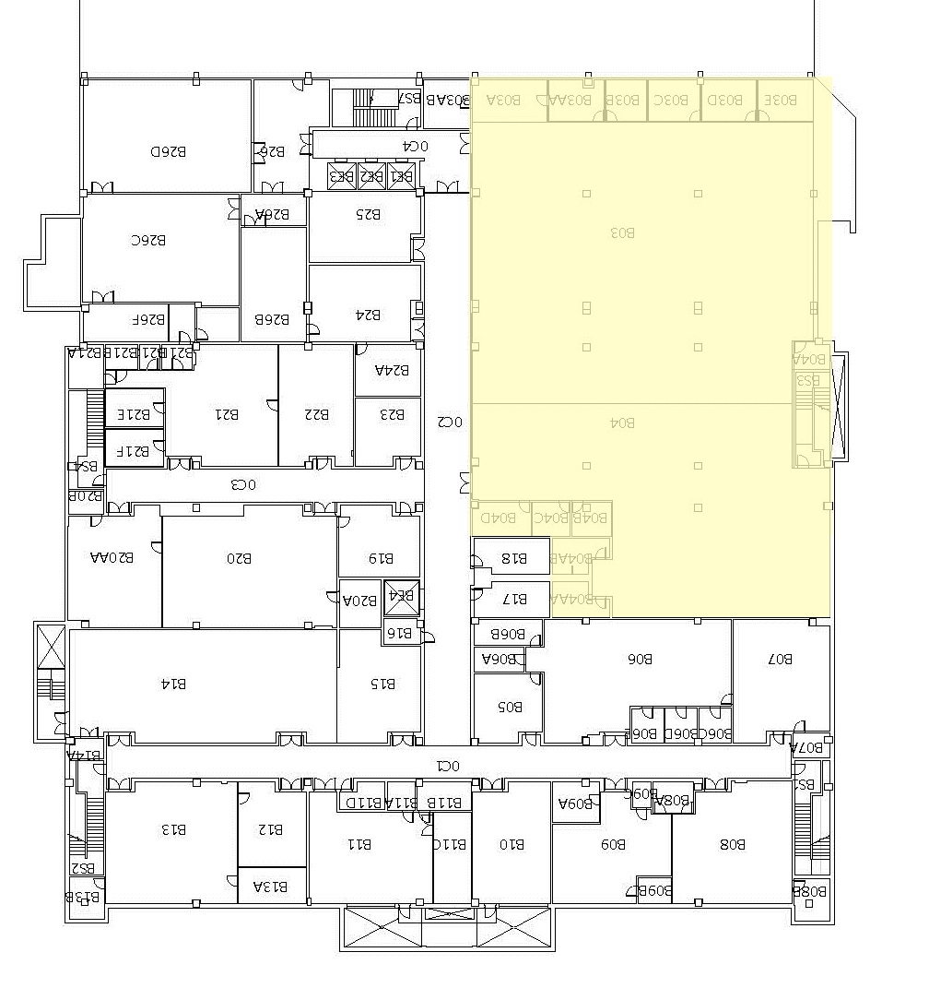
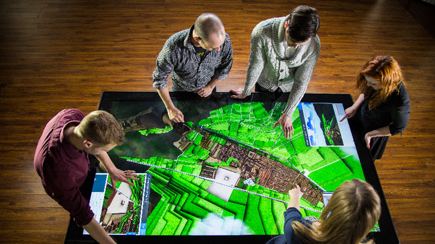

Data CAVE
Data Creation, Analysis, Visualization & Exploration
presentation: pow123.github.io/dataCAVE
Feb 09 & 24, 2017
Overview
|  | The Data CAVE provides support and services centering on data-driven research, e-science, and digital humanities data analysis. |
Aims
- provide a support mechanism for the growing areas of digital research and scholarship
- support collaborative and interdisciplinary research using emerging technologies
- to provide a pathway and opportunities for students to explore digital technologies
Services
Data and Visualization (DAVis) Workshop Series, Software & Library Carpentry, Recurring Training
Space Plan
24 hour lab
Collaboration
Areas for interacting - consultations and teamwork.
Officing
Staff are officed separate from the technology.
Software
- Open Source
- OpenRefine
- R, R Studio, Python, Pandas, MATLAB
- Google Earth Pro, QGIS
- Gephi, Sci2
- Open Science Framework, iRODS
- Proprietary
- SPSS, STATA, SAS
- Tableau, Plotly, Cytoscape
- ArcGIS, CityEngine, ENVI
- BodyViz, 3D GIS in the Cloud
- EZID
Hardware
- Linux (or Windows) server
- Linux allows for open source applications (FTP, mail, etc.)
- Python comes directly installed on server
- Can use latest Quadro card P6000 w/ 24 GB memory
- Videoconferencing Hardware
- Magic Planet Visualization Globe
Hardware
- 12 Computers
- Dell Precision T7910, Intel Xeon 10 core 3.1 GHz processor, 64 GB RAM, NVIDEA Quadro M2000 video w/ 4GB memory, 2 TB drive, ~$5,700 each
- Falcon Northwest Mach V, liquid cooled Intel Core i7, 3.5GHz processor, 128 GB DDR4 RAM, NVIDEA GeForce GTX video (1080 option, 8 GB) with 8 GB onboard memory, 2 TB SSD drive, 64-bit Windows 10 ~$8,000 each
- 2 large 4K 50-inch display screens or wall projectors (3840x2160)
- Liquid Galaxy 7 panel system ~ $35,000
1 IDEUM Multi-Touch Table
{kind=link}
Prysm Cascade video wall
 Specs
Specs
People
- Officed in/near the Data CAVE: Research Data Services staff
- Office hours: digital archivist, copyright librarian, OIT data analysis consultant, liaisons
- Partners: digital projects librarians (DC) & programmer analysts (LST)
- Campus advisory committee: faculty from various disciplines, and librarians from various departments